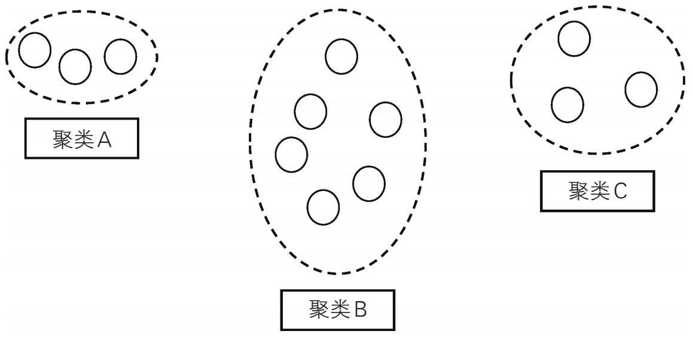
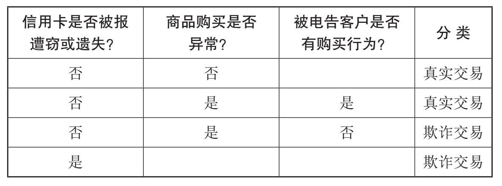
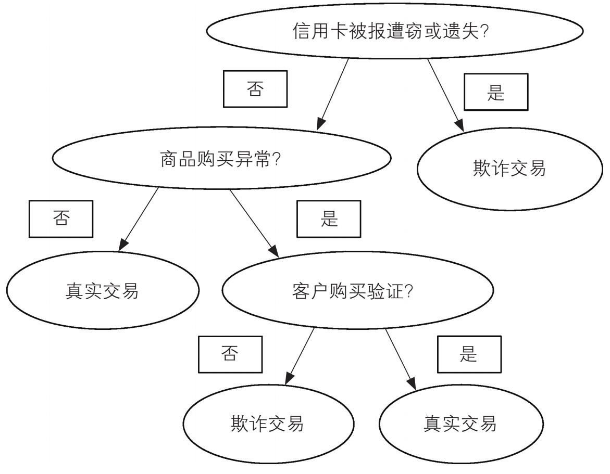

大数据不是凭空而来的，它与计算机技术的发展密切相关。计算能力的快速提升和存储容量的迅猛增长，致使收集的数据越来越多。谁首创“大数据”这个术语现在已无从查考，但是它的本义一定与规模相关。然而，不可能仅根据生成和存储多少Pb甚或Eb来定义大数据。我们可以借由术语“小数据”来讨论由数据爆炸引发的“大数据”——尽管“小数据”并没有被统计学家广泛使用。大数据肯定是大而复杂的，但为了最终给出一个定义，我们首先需要了解“小数据”及其在统计分析中的作用。
大数据与小数据
1919年，罗纳德·费希尔来到位于英国的洛桑农业实验站分析农作物的数据。今天，费希尔被广泛认可为现代统计学这一强大学科的创始人。有关这些农作物的数据，来自19世纪40年代以来在洛桑进行的经典田间实验，包括针对冬小麦和春大麦所收集的数据，还有来自野外观测站的气象数据等。费希尔启动的项目被称为“实验田”，目标是研究不同肥料对小麦的影响，目前该项目仍然在运行。
费希尔注意到，他所收集的数据颇为混乱，因此他将自己最初的工作称作“耙粪堆”，这个说法后来变得很出名。然而，通过仔细分析研究那些记录在皮革装订的笔记本上的实验结果，费希尔终于理解了这些数据。没有充裕的时间，没有今天的计算技术，费希尔只有一个机械计算器。尽管如此，他还是成功地完成了对过去七十年累积的数据的计算。这个被称为“百万富翁”的计算器，依赖于单调乏味的手摇程序获取动力，但这在当时已经是创新的高科技了，因为它是第一个可以进行乘法运算的商用计算器。费希尔的工作是计算密集型的，没有“百万富翁”的帮助，他肯定无法完成计算工作。如果在今天，现代计算机在几秒钟内就能完成他所做的所有计算。
虽然费希尔整理并分析了很多数据，但今天来看，数据量并不算大，而且肯定不会被视为“大数据”。费希尔工作的关键是，使用精确定义和精心控制的实验，旨在生成高度结构化的、无偏的样本数据。鉴于当时可用的统计方法只能应用于结构化数据，这样做是必要的。实际上，这些宝贵的技术今天仍然是分析小型结构化数据集的基石。然而，我们今天可以使用的电子数据源是如此之多，以至这些技术已不再适用于我们现在可以访问的超大规模数据。14
定义大数据
在数字时代，我们不再完全依赖于样本，因为我们经常可以收集到总体的所有数据。但是，这些越来越大的数据集的规模还不足以定义“大数据”——我们必须在定义中包含复杂性 。
我们现在处理的并非精心构建的“小数据”样本，而是不针对15 任何具体问题而收集的规模宏大的数据，它们通常都是非结构化的。为了描述大数据的关键特征，从而达到定义该术语的目的，道格·莱尼在2001年的文章中提出使用三个“v”来表征大数据：数量大（volume）、种类多（variety）和速度快（velocity）。通过依次审视这三个不同的“v”，我们就可以更好地了解“大数据”这个术语的含义。
数量大
“数量”指的是收集和存储的电子数据量，而且数据一直在持续的增加中。“大数据”一定很大，但到底有多大？以当前的眼光，给“大”设定一个数量标准是很容易的一件事，但我们应该明了，十年前被认为“大”的东西已经不再符合今天的标准。数据采集的增速是如此之快，任何设定的标准都将不可避免地很快过时。2012年，IBM公司和牛津大学报告了他们的大数据工作调查结果。在这项针对来自95个不同国家的1144名专业人士的调查中，超过一半的人认为1Tb和1Pb之间的数据集可视为“大”，然而有大约三分之一的受访者回答“不知道”。该调查要求受访者从八个选项中选择一个或两个表示大数据的特征，只有10%的人投票选择“数据量”，排名第一的选择是“范围广泛的数据”，该选项吸引了18%的人选。不能以“数量”门槛定义大数据还另有原因，比如存储和收集的数据类型这些因素，会随着时间的推移而发生变化并影响我们对数量的认知。诚然，一些数据集确实非常大，例如来自欧洲粒子物理研究所（CERN）的大型强子对撞机的数据。它是世界上首屈一指的粒子加速器，自2008年以来一直在运行。即便只提取其总数据的1%，科学家每年需要分析处理的数据也会高达25Pb。通常情况下，如果一个数据集大到不能使用传统的计算和统计方法进行16 收集、存储和分析时，我们就可以说它满足了数量标准。像大型强子对撞机生成的这类传感器数据只是大数据的一种，所以让我们也看看其他类型的数据是何种情形。
种类多
虽然你可能经常看到“互联网”和“万维网”这两个术语被当作同义词而交替使用，但它们实际上是非常不同的概念。互联网是网络中的网络，由计算机终端、计算机网络、局域网（LAN）、卫星、手机和其他电子设备组成。它们都连在一起，通过IP协议从某个地址相互发送数据包。万维网（www或Web）的发明人伯纳斯——李将其描述为“全球信息系统”。在此系统中，互联网是一个平台，所有拥有联网计算机的个人都可以通过此平台与其他用户进行通信，比如通过电子邮件、即时消息、社交网络和短信进行交流。从互联网服务提供商（ISP）那里申请开通网络后，就可以获得“万维网”和许多其他服务。
一旦连接到万维网，我们就可以访问网络上那些无序而混杂的数据了。数据源既有可靠的，也有令人生疑的；重复和讹误的数据随处可见。这与传统统计所要求的干净和精确的数据相去甚远。尽管从万维网收集的数据有结构化的、非结构化的或半结构化的多种（例如社交网站上的文档或帖子等非结构化数据，电子表格等半结构化数据），但来自万维网的大数据主体上都是非结构化的。例如，全球的推特用户每天发布大约5亿条140个字符的消息或推文，这些数据都是非结构化的。 [2] 推特上的这些短消息具有宝贵的商业价值，可以根据它们所表达的情绪划分为积极的、消极的和中立的三类。作为一个新领域，情感17 分析需要开发专门的技术。我们只有使用大数据分析法，才能有效地完成这项工作。虽然医院、军方和众多的商业企业出于各种目的，收集了大量差异化的数据，但从根本上说，它们都可以归类为结构化、非结构化或半结构化数据。
速度快
今天，万维网、智能手机和传感器等，正源源不断地生产着数据。速度自然与数量相关：生成数据的速度越快，数据量也就越大。例如，当今社交媒体上的消息常以滚雪球的方式传播，其传播方式与“病毒”无异。我在社交媒体上发布了某个内容，我的朋友们看到了，每个人都与朋友分享，朋友的朋友再发给朋友分享。很快，这些消息就会传遍世界各地。
速度也指数据被处理的速度。比如，传感器数据（像自动驾驶汽车生成的数据）必须实时生成。如果要确保汽车安全行驶，通过无线方式传送到数据中心的数据必须要得到及时分析，并将必要的指令实时发送回汽车。
可变性可以被认为是“速度”的附加维度，它指的是数据流量的变化率，例如高峰时段数据流量的显著增加。这一点也很重要，因为计算机系统在这个时段更容易出现故障。
准确性
除了莱尼提议的三个基本的“”v（即数量大、种类多和速度快）之外，我们可以添加“准确性”为第四个维度。准确性是指所收集数据的质量。准确且可靠的数据，是20世纪统计分析的标志，为了设计出实现上述两个目标的方案，费希尔和其他一些18 学者可谓呕心沥血。但是，数字时代产生的数据通常是非结构化的，数据采集也常常在没有实验设计的前提下进行，甚至事先任何有价值问题的概念都没有。然而，我们就是寻求从这种大杂烩中获取信息。以社交网站生成的数据为例，这些数据本质上是不精确、不确定的，甚至通常被发布的信息就是彻头彻尾的谬误。那么，我们如何相信这些数据能产生有意义的结论呢？数量可以克服数据的如上缺陷。正如我们在第一章中所看到的那样，修昔底德所描述的普拉蒂亚部队让尽可能多的士兵计数砖块，就是想发挥数量的优势，以期获得他们意欲翻越的城墙的精确（或接近精确）高度。然而，我们需要多一个心眼，正如统计理论所告诉我们的，更大的数量会导致相反的结果。数据量越大，虚假的相关性就越多。
可视化和其他的“v”
在描绘大数据时，“v”不再固定，具有了可选择性，在莱尼最初的3v之外，竞争性的新词汇有“脆弱性”（vulnerability）和“可行性”（viability）等词，其中最重要的或许是“价值”（value）和“可视化”（visualization）。“价值”一般指的是大数据分析结果的质量。它也被用来描述商业数据企业对其他公司出售数据，而购买了数据的公司会利用自己的分析方法处理和使用数据，因此，“价值”是一个在数据商业领域中经常被提及的术语。
“可视化”虽然并不是大数据的特征，但其在展示数据分析结果和交流中意义重大。常见的静态饼图和柱状图已经得到进一步优化，它们之前用以帮助我们理解小数据集，现在也可以在大数据可视化方面发挥作用，但其适用性仍然有限。例如，信息图虽然能进行更复杂的数据呈现，但却是静态的。由于大数据是持续增加的，所以最佳的可视化手段应是用户交互式的，且创19 建者应能进行定期更新。比如，当我们使用GPS规划汽车旅行时，我们访问的是一个基于卫星数据的高度交互性图像，该图像能对我们进行定位。
综上所述，大数据的四个主要特征，即数量大、种类多、速度快和准确性，给数据管理带来了巨大挑战。我们在应对挑战的过程中期待获得的优势，以及我们期望用大数据来回答的问题，都可以在数据挖掘中找到答案。
大数据挖掘
在工商界和政界领袖中，“数据就是新石油”这句话广为流传。大家普遍认为，它是乐购（Tesco）客户忠诚卡的创始人克莱夫·胡姆比于2006年提出的。这句话不仅朗朗上口，也指出了数据的特征：它既像石油一样异常珍贵，但也必须先经过处理才能实现其价值。数据供应商们最初使用这句话作为营销口号，是为了销售自己的产品，他们试图让企业相信大数据就是未来。未来可期，但这个比喻于当下而言却并不完全准确。一旦你发现了油矿，你就拥有了适销对路的商品。但大数据不同，除非你有正确的数据，否则你无法创造任何价值。所有权是个问题；隐私也是个问题；而且与石油不同的是，数据似乎是一种无限资源。但是，也不必苛责这种以石油作比的说法，大数据挖掘的任务，确实是从大量的数据集中提取有用和有价值的信息。
利用数据挖掘、机器学习方法与算法，不仅可以侦测数据中的异常模式或异常现象，也可以进行预测。为了从大数据集中获得这类信息，我们可以使用有监督机器学习技术或无监督机器学习技术。有监督机器学习，有点类似于人类从例证中学习知识的过程。通过学习有正确范例标记的训练数据，计算机程序会生成规则或算法，然后据此对新数据进行分类。算法会通过测试数据进行验证。相较之下，无监督机器学习的算法，使用20 的是无标记的输入数据，且不给出数据处理目标，旨在探究数据并发现其中的隐藏模式。
我们可以将信用卡欺诈侦测作为一个例子，从而了解每种方法是如何工作的。
信用卡欺诈侦测
人们在侦测和防止信用卡欺诈方面做了很多努力。如果你不幸接到了信用卡欺诈侦测办公室的电话，你可能会好奇，他们是如何确定最近你卡上出现的消费很可能是欺诈消费的。由于信用卡交易的次数非常多，人们已无法再用传统数据分析技术通过人工来侦测交易活动，因此，大数据分析正变得越来越重要。金融机构不愿透露欺诈侦测的具体细节是可以理解的，因为这样做会让网络罪犯获知具体细节，从而找到规避欺诈侦测的方法。但是，粗线条的简单描述也能让我们感知其趣味所在。
信用卡欺诈存在几种可能的情形，我们可以先看看个人银行业务。假设是信用卡被盗，且诈骗者利用被盗信息，如PIN码（个人识别码）使用了信用卡。在这种情况下，信用卡支出可能骤增，发卡机构很容易就能侦测到这种欺诈行为。但更常见的情况是，诈骗者会先用盗取的信用卡进行“测试交易”，在“测试交易”中，他们会购买一些并不昂贵的商品。如果此次交易后平安无事，那么诈骗者接下来就会刷取更大的数额。这样的交易活动可能是欺诈，也可能不是，或许持卡人的购买模式发生了变化，也或许就是那个月花了很多钱而已。那么，我们如何侦测哪21 些交易是欺诈呢？首先来看一种被称为聚类 的无监督技术，以及在上述情况下它的工作原理。
聚类
基于人工智能算法，聚类算法可用于侦测客户购买行为中的异常。我们通过研究交易数据找出交易模式，并据此侦测任何异常或可疑情况，这些异常情况可能是欺诈，也可能不是。
信用卡公司采集了大量数据，并利用这些数据建立个人档案，显示客户的购买行为。然后，通过迭代（即重复进行同一运算以生成结果）程序以电子方式识别具有类似属性的个人档案，从而获得聚类。例如，可以根据有代表性意义的支出范围或位置信息、客户的最高支出限额或购买的商品种类来定义聚类，每种标准都会形成一个独立的聚类。
信用卡提供商收集的数据，并未标记交易是否为欺诈。我们的任务是将这些数据作为输入数据，并使用合适的算法对交易进行精确分类。为此，我们需要在输入的数据中找到相似性，从而进行分组或确定聚类。例如，我们可以根据消费金额、交易地点、物品种类或持卡人年龄对数据进行分组。当达成新交易时，系统将对该交易进行聚类识别，若新交易与该客户的现有聚类标识不同，则新交易会被视为可疑交易。即使新交易属于常见聚类，但若与聚类中心相距甚远，那么仍是可疑交易。
例如，一位住在帕萨迪纳八十三岁的老奶奶突然买了一辆豪华跑车，若这与她平时的购物习惯，如去杂货店和理发店不一22 致，则会被视为反常现象。所有像老奶奶购买豪华跑车这样的反常事件都值得进一步调查，而联系持卡人通常是调查的第一步。图1是说明上述情况的简单聚类图解。
聚类B是老奶奶平时的月支出，该聚类也包括月支出与她类似的其他人。然而，在某些情况下，例如她的年度旅行期间，老奶奶的月支出就会有所增加，这样一来也许就会把她归到聚类C中。但是，聚类C离聚类B并不太远，所以并没有太大的不同。即便如此，由于这笔消费属于不同的聚类，也是可疑的账户活动，因而需要进行核实。像购买豪华跑车这样的行为则会被归于聚类A，这与她惯常所在的聚类B相去甚远，所以极有可能是非法交易。

图1 聚类图解 [3]
与此相反的是，如果我们已经有了一组欺诈数据，我们就会使用分类法，而不是聚类算法，这是欺诈侦测中的另一种数据挖23 掘技术。
分类
分类是一种有监督学习技术，前提是对相关群体事先就有所了解。我们以一个数据集为例，对该数据集的各种观察结果（先前掌握的知识）都已正确标记或分类。数据集被分为训练集和测试集两部分，训练集帮助我们构建数据的分类模型，测试集则用于检查分类模型是否良好。然后，我们就可以利用这个模型对新监测结果进行分类。
为了说明分类的具体情况，我们将构建一个用于侦测信用卡欺诈的小型决策树。
如图2所示，为了构建决策树，我们假设已经采集了信用卡交易数据，并且已根据所了解到的历史情况，将诸多交易划分为真实交易或欺诈交易。
通过这些数据，我们可以构建如图3所示的决策树，计算机可据此对输入系统的新交易进行分类。我们希望通过提出一系列问题，确定新交易的类别，即到底是真实交易还是欺诈交易。

图2 分类的欺诈数据集24

图3 交易决策树
如图3所示，从交易决策树的顶部开始，自上而下有一系列的测试问题，这些问题将帮助我们对新交易进行分类。
例如，如果史密斯先生的账户信息显示他已报告信用卡遗失或遭窃，那么任何使用此信用卡的交易都将被视为欺诈。若信用卡没有遗失或遭窃的报告，那么系统将会核查该客户是否购买了不寻常的商品，或是所购商品的金额是否符合客户的消费习惯。如果与往日没什么差别，那么这笔交易就会被视为正常交易，并被标记为“真实”；反之，如果所购商品与往日相去甚远，银行则会致电史密斯先生。如果史密斯先生确认他购买了该商品，那么这笔交易则为真实交易，否则，此次交易就是欺诈。
在大致了解何为大数据，并讨论了大数据挖掘所能解决的25 问题之后，接下来让我们看看数据存储问题。